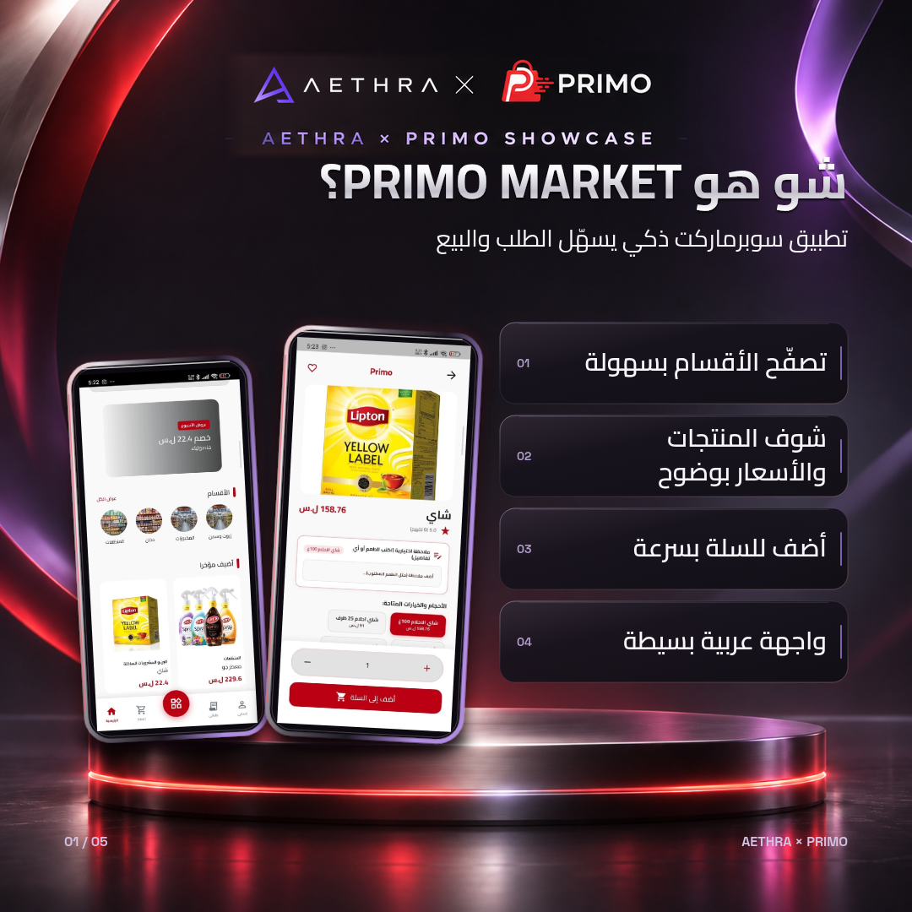
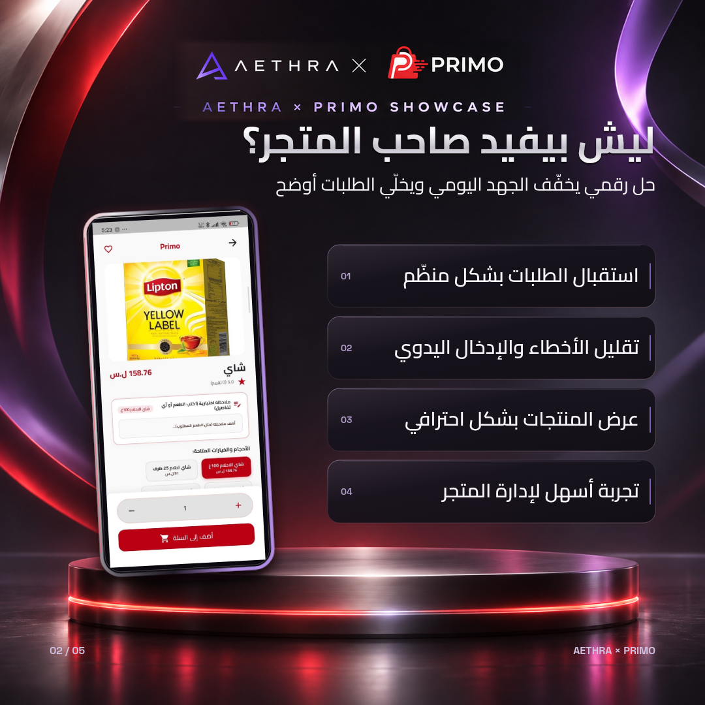
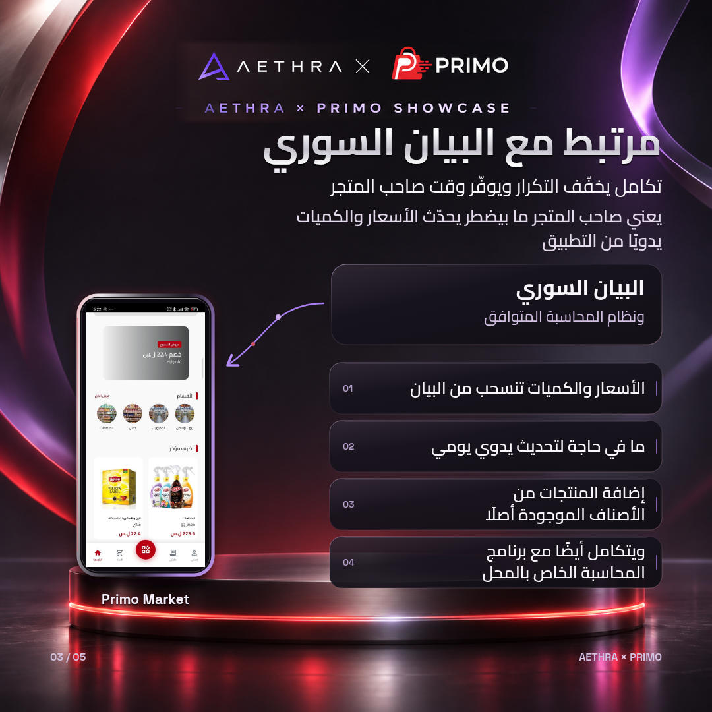
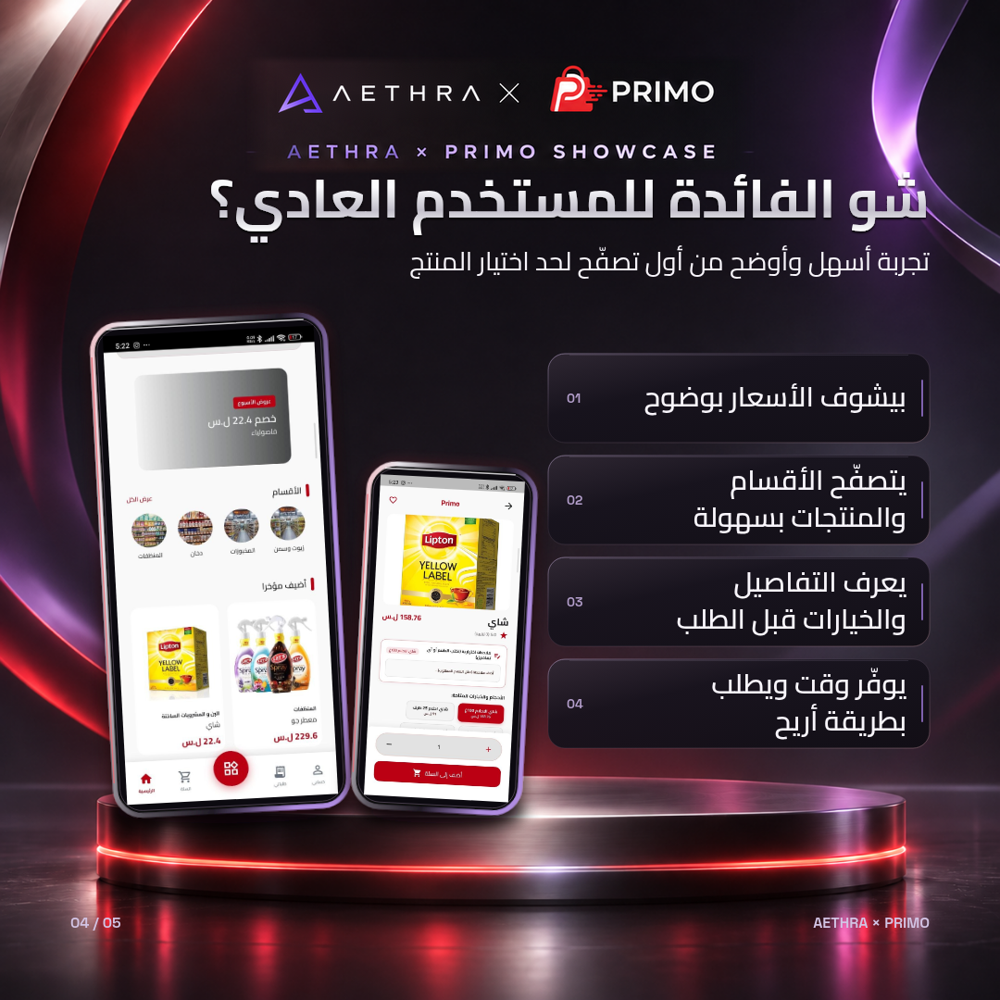

AETHRA × Primo — خمس شرائح للمراجعة
الصور النهائية الفعلية، كل شريحة بقياس 1080 × 1080 بكسل. اضغط الصورة لفتح ملفها بالحجم الكامل.


01 — التعريف بالتطبيق



02 — فوائد صاحب المتجر



03 — التكامل مع البيان السوري


